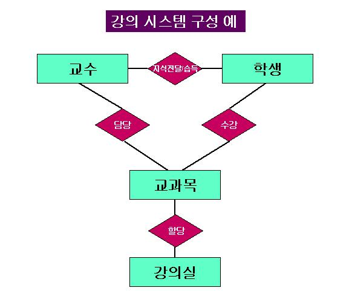
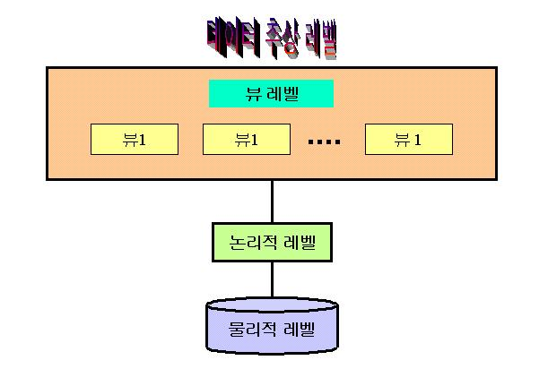
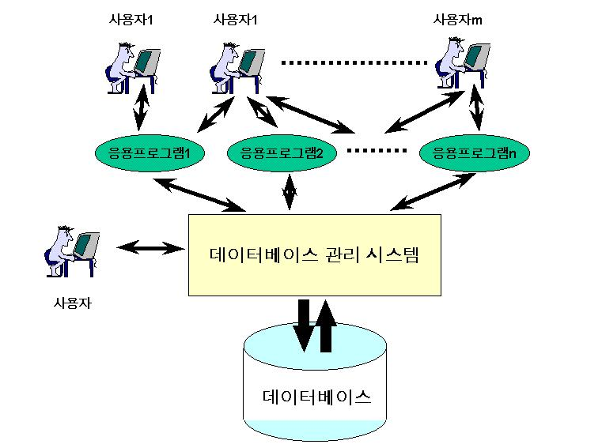

제 1 회 데이터베이스란 무엇인가 ? |
|
목 차
|
시작하기전에....제 1 회 "데이터베이스란 무엇인가?"를 학습하면서 다음에 대하여 정리해 보도록 합시다.
|
1. 시스템과 실세계시스템(system)이란 ?여러분은 시스템이란 용어를 매우 자주 듣기도하고 또한 사용하기도 해왔을 것이다. 시스템은 우리 용어로 체계 또는 체제로 번역되어 사용되기도 한다. 사실 상 우리 자신 자체가 시스템이기도 하면서 한편으로는 시스템 속에 한 구성원이기도 하다. 우리가 관심을 갖거나 다루고 있는 관심의 대상들은 대부분 이러한 시스템 측면에서 표현하고 관리된다. 그러나 만일 여러분에게 시스템이란 무엇인지에 대하여 설명하라면 어떻게 설명할 수 있을까 ? 시스템을 한마디로 정의하기에는 매우 부족한 면이 있을 것이다. 그러나 본 강의 주제로서 다루는 데이터베이스는 시스템 측면에서 이해하고 구성하며 관리되어야 하기 때문에 시스템에 대한 공통 개념이 요구된다. 시스템이란 무엇인지를 잘 이해하기 위해 먼저 시스템의 특성을 몇 가지 살펴보는 것이 좋을 것이다. 시스템의 특성은 다음의 세 가지로 요약하여 설명할 수 있다. 
시스템의 특성 중에 하나는 시스템은 하나 이상의 요소들에 의해서 구성된다는 것이다. 구성요소들은 각각 고유의 역할과 기능을 담당한다. 예로서 강의 시스템을 살펴보자. 강의 시스템은 다음의 그림 강의시스템 구성 예에서처럼 구성요소로서 교수, 학생, 교과목, 강의실 등을 들 수 있다. 그림에서 시스템의 구성요소는 각각 사각형으로 표시되었다. 교수는 지식을 전달하는 기능과 역할을 하며, 학생은 지식습득, 교과목은 교수가 강의하고 학생이 수강하는 대상으로 이 둘 사이의 매개 역할을 한다. 또한 강의실은 교수와 학생이 지식의 전달과 습득을 위한 공간으로서의 역할을 갖게 된다. 여러분들은 지금 강의 시스템의 구성요소인 사이버 강의실에서 학습을 하고 있는 것이다.
시스템의 두 번째 특성은 시스템은 자신을 구성하는 요소들 사이에서 상호관계를 갖는다는 점이다. 이러한 상호관계는 무엇인가를 물리적으로 실제로 주고받고 하는 동적인 상호작용과 주고받는 것은 없지만 형이상학적 관계에서 존재하는 정적인 관계가 존재할 수 있다. 시스템의 구성요소들은 서로 유기적으로 상호작용을 하면서 고유의 기능과 역할을 수행한다. 강의 시스템 예에서 교수는 학생에게 지식을 전수하며 학생은 교수로부터 지식을 전달받는 동적인 상호작용을 갖는다. 교수는 교과목을 담당하고 학생은 교과목을 수강하는 측면에서 볼 때 교수와 교과목사이에서는 담당 관계가 존재하며 학생과 교과목 사이에는 수강 관계가 존재한다. 한편 그림에서 나타난 바와 같이 강의실은 교과목에 할당되므로 이 둘 사이에는 할당 관계가 존재한다고 볼 수 있다. 지식의 전달과 습득 관계는 동적인 상호작용 관계로 볼 수 있으며 담당, 수강, 할당 관계는 주고받는 매개체가 없으므로 정적인 관계로 간주할 수 있다. 강의 시스템 구성 예의 그림에서 구성요소들 사이에 존재하는 상호관계는 다이아몬드로 나타내었으며 다이아몬드에 연결된 연결선은 이 관계에 관련된 구성요소들을 나타낸다. 사실 상 강의시스템 예에서 시스템 구성요소와 구성요소들간에 존재하는 상호관계는 보는 관점에 따라 다를 수가 있으므로 여러분은 다른 관점으로 나타낼 수 있을 것이다.
시스템의 세 번째 특성은 시스템은 자신이 추구하는 목표를 갖거나 또는 다른 외부 시스템과 관련하여 담당한 기능 또는 역할을 갖는다는 것이다. 강의 시스템 예에서 강의 시스템의 궁극인 목표란 지식의 신속한 전달과 습득이 될 수 있으며 보는 관점에 따라 여러분들 측면에서는 수강학점 이수가 될 수도 있을 것이다. 또한 가의 교과목이 무엇이냐에 따라 다른 관점의 목표가 될 수도 있다. 시스템의 다른 예로 하드웨어 시스템을 들어보자. 하드웨어 시스템의 구성요소는 입력장치, 출력장치, 기억장치, 연산장치 제어장치 등의 요소들로 구성되며 각각은 자체적인 고유의 기능을 갖는다. 입력장치는 외부로부터 내부로의 데이터 입력하는 기능과 역할을, 출력장치는 내부의 데이터를 외부로 출력하는 기능을, 기억장치는 데이터를 일시적 또는 영구히 보존하는 기능과 역할을 담당하며, 연산장치는 산술연산과 논리연산, 비교연산을 처리하는 기능을, 제어장치는 명령어 처리와 다른 구성요소들의 제어 기능을 담당한다. 이들 구성요소들은 자신의 기능과 역할을 서로 데이터를 주고받으면서 수행한다. 하드웨어 시스템은 소프트웨어 시스템과 관련하여 소프트웨어가 처리하는 업무를 물리적 기능으로 처리하는 역할을 담당한다. 이상 시스템의 특성을 종합하면 시스템이란 하나 이상의 구성요소들이 상호관계 갖거나 혹은 상호작용을 하면서 어떤 목표를 추구하거나 다른 시스템과 상호 관련한 기능과 역할을 담당하는 하나의 집합체라 정의할 수 있다. 사실 상 이 정의 자체도 시스템을 정확히 정의하기란 부족한 점들이 존재한다. 그러나 이 정의를 여러분들이 정확히 이해한다면 이 강좌뿐만이 아니라 학문에 관련한 분야 및 실생활에 관련한 모든 분야에서 여러분의 관심 대상에 대한 효율적인 파악과 응용이 가능해 지리라 믿는다.
실세계(real world)란 ?실세계란 관심의 대상인 존재하는 시스템을 의미한다(따라서 실세계를 실 시스템(real system)이라고도 부름) 여기에서 '존재'의 의미는 반드시 가시적인 물리적 존재만을 의미하는 것만은 아니다. 예를 들어 대학 시스템을 고려해보자. 대학 시스템은 학생, 교수, 직원 등의 물리적 구성요소들만 존재하는 것이 아니라 학칙, 업무 부서, 단과대학, 각 부서 간에 주고받는 정보, 업무 처리 절차 등을 포함하는 구성요소들과 유기적인 관계를 포함하는데 이들 대부분은 물리적이지 않으면서 가시적이지도 않다. 따라서 '존재'의 의미는 가시적 혹은 비가시적인 물리적 또는 논리적 존재를 의미함을 알 수 있다. 이러한 의미로 볼 때 여러분이 소속한 가상 대학도 실세계가 될 수 있다. 가상대학은 물리적으로 대학 건물이 존재하지 않지만 교수와 학생, 관리자 등의 물리적 구성요소를 포함하여 등록, 수강신청, 성적처리 등 절차적 업무 기능과 관리 담당 부서 등이 논리적으로 존재하므로 실세계에 포함시킬 수 있다. 실세계는 구성요소들이 상호작용을 하면서 고유의 기능을 수행한다. 대부분 각 구성요소들은 또 하나의 시스템이 될 수 있다. 하드웨어 시스템의 구성요소 중의 하나인 출력장치는 이를 구성하는 각 부품들이 구성요소가 되며 이들 구성요소들의 상호작용에 의해 고유의 출력 기능을 수행한다. 따라서 출력장치는 하나의 시스템인 것이다. 이와 같이 하나의 시스템을 이루는 구성요소로서의 시스템을 서브 시스템 또는 부 시스템(subsystem)이라 한다. 일반적으로 실세계는 자신의 고유 기능을 수행하는 과정 중에 그 시스템의 상태가 지속적으로 변화하게 된다. 예를 들자면 가상대학 시스템에서 데이터베이스 교과목에 25명의 학생이 처음 수강을 신청했다고 하자. 이러한 후에 데이터베이스 교과목을 신청한 학생 중 5 명이 자퇴를 했다면 가상대학 시스템에서 데이터베이스 교과목에 대한 수강인원은 25명이었지만 자퇴 후의 가상대학 시스템에서 데이터베이스 교과목을 수강하는 학생인원은 20명으로 변화하게 된다. 인간이 실세계로부터 필요한 정보를 정확히 얻기 위해서는 현재 상태를 정확히 반영하는 데이터가 요구된다. 또한 때에 따라서는 시간에 따라 변화된 상태에 각각에 대한 데이터 모두를 필요로 할 수가 있다. 컴퓨터 시스템에서 실세계 상태에 대한 정보는 데이터로 표현되어 파일 형태로 저장되거나 데이터베이스 형태로 존재하게 된다.
2. 데이터베이스 개념실세계에서 변화되고 발생하는 다양하고 많은 정보를 선별 분석하여 특정분야에 응용하는 광의의 정보시스템은 실세계로부터 획득한 데이터를 발췌, 요약하여 이를 컴퓨터 기억장치에 저장한 후 사용자의 필요에 따라 정보를 환원함으로써 정보의 순환이 이루어진다. 컴퓨터를 이용하여 데이터를 처리한데 중요한 사항은 데이터의 저장과 이용 방법이다. 여기서 데이터라 함은 특정 분야의 정책을 결정하기 위한 정보의 재료로서 이는 실세계로부터 얻어진 대상이나 사건을 표현한다. 컴퓨터 내의 데이터가 실세계를 정확히 반영해야 한다. 만일 컴퓨터내의 데이터가 실세계를 정확히 반영하지 않는다면 이 데이터들로부터 추출된 정보는 전혀 신뢰할 수 없기 때문이다. 파일처리 시스템과 문제점데이터는 레코드로 표현되며 관련성 있는 레코드들을 모아서 데이터 파일로 구축한다. 이러한 데이터 파일들을 중심으로 레코드 검색, 삽입, 삭제, 갱신, 파일 합병, 파일 재구성 등의 파일조작연산을 통하여 정보를 얻고 관리하는 시스템을 파일처리 시스템(file processing system)이라 한다. 이러한 파일처리 시스템에서 응용 프로그램들은 서로간에 파일들을 공유함이 없이 각각 독자적인 파일들을 이용하고 관리하는데 이와 더불어 파일처리 시스템에서 발생되는 문제점들을 살펴보면 다음과 같다. 파일처리 시스템의 문제점
한편 발생된 데이터를 통괄적인 관점에서 서로 연관된 정보의 중복을 최소화하여 한 곳에 모아 저장함으로써 다수의 사용자로 하여금 필요한 정보를 공유하도록 한 정보의 집합체를 데이터베이스(database)라 한다. 다시 말하면 데이터베이스란 어느 특정한 조직의 응용업무에 공동 사용하기 위하여 운영상 필요한 데이터를 완벽화, 비중복화, 구조화하여 컴퓨터 기억장치에 저장한 데이터의 집합체이다. 데이터베이스 시스템의 역사데이터베이스의 어원은 1963년에 시스템 디벨로프사에서 개최한 "Development and Management of Computer - Center Data Bases" 심포지엄에서 처음 사용하였으며 데이터베이스의 독립성 개념을 도입한 데이터베이스의 모체는 1963년에 제너럴 일레트릭사에서 개발한 "Integrated Data Store"에서 찾아볼 수 있다. 또한 데이터베이스 표준화 작업은 1965년의 CODASYL의 DBTG에서 시도되었다. 그 후 데이터베이스에 대한 연구가 꾸준히 진행되었는데 대표적인 데이터베이스 시스템으로는 관계데이터베이스시스템, 객체지향 데이터베이스 시스템, 망 구조 데이터베이스 시스템, 계층 구조 데이터베이스 시스템이 있다. 최근에는 관계 데이터베이스 시스템이 주류를 이루며 객체지향 데이터베이스 시스템의 활용이 점차 확대되어 가고 있는 상태이다. 관계 데이터베이스 시스템은 1970년대 E.F.Codd에 의하여 관계 데이터베이스 모델이 제안되었으며, 이를 기반으로 실험용 관계 데이터베이스 관리 시스템인 SYSTEM R이 1974년 IBM에서 개발되었다. 또한 1986년 데이터베이스 언어인 SQL이 ANSI/X3 SPARC에 의해 관계 데이터베이스 관리 시스템의 표준언어로 채택되었다. 현재에도 꾸준히 데이터 베이스에 관한 연구가 활발히 진행 중인데 그 대표적인 예로 미국의 전자계산기 학회의 데이터베이스 분과 위원회와 데이터베이스 관리 연구회 등이 있다. 데이터베이스 시스템의 특성데이터베이스 시스템은 다음과 같은 몇 가지 특성을 가지고 있다. 1) 실시간 접근성오늘날과 같이 급변하는 상황에서 일괄처리(batch processing)에만 의존하는 정보는 드물기 때문에 컴퓨터가 접근할 수 있는 저장 장치에 수록된 데이터베이스는 수시로 비정형적인 질의에 실시간으로 처리하고 응답할 수 있어야 한다. 여기서 실시간 처리(real-time processing)라고 하는 것은 생성된 데이터를 즉시 컴퓨터에 바로 반영할 수 있게 하는 처리 방식을 말한다. 일반적으로 온라인 처리라 하면 보통 이 실시간 처리를 의미한다. 2) 계속적인 변화데이터베이스의 내용으로 표현되는 데이터베이스의 상태는 정적이 아니고 동적이다. 즉, 데이터베이스는 새로운 데이터의 삽입, 기존 데이터의 삭제, 갱신을 통하여 실세계를 정확히 반영하는 데이터를 유지하면서 변화한다. 데이터베이스는 항상 변화하는 실세계를 반영해야 하기 때문에 자연히 지속적으로 변하게 된다. 이 계속적인 변화 특성 때문에 데이터베이스를 정확하게 관리하는 것이 더욱 어려운 문제가 된다. 3) 동시 공유데이터베이스는 서로 다른 목적을 가진 응용들을 위한 것이기 때문에 여러 사용자가 동시에 하나의 응용 프로그램에 의해 접근되는 데이터와 다르며 비록 여러 프로그램이 같은 데이터를 공유한다 하더라도 완전히 순차적으로 공유하는 개념과도 다르다. 같은 내용의 데이터를 여러 사람이 서로 다른 방법으로 동시에 공유한다는 것은 그 관리 면에서 복잡하게 될 뿐만 아니라 그 조직 면에서도 매우 복잡하게 된다. 왜냐하면 모든 데이터베이스의 데이터 요소들이 처음부터 항상 동시 공유가 가능하도록 조직 관리되어야 하기 때문이다. 4) 내용에 의한 참조데이터베이스 환경 하에서 데이터의 참조는 수록되어 있는 데이터 레코드들의 주소나 위치에 의해서가 아니라 데이터의 내용, 즉 데이터가 가자고 있는 값에 따라 참조된다. 일반적으로 참조하길 원하는 데이터의 자격 요건을 제시하면 이 조건을 만족하는 모든 레코드들은 하나의 논리적 단위로 취급되고 접근된다. 3. 데이터베이스 추상 레벨과 데이터 독립성데이터베이스 관리 시스템(DataBase Management System : DBMS)은 상호 관련된 파일들과 사용자들이 이 파일들을 접근하고 변경하고 관리할 수 있도록 해주는 프로그램들의 총제적 모임을 말한다. 데이터베이스 시스템의 주요 목적 중의 하나는 사용자에게 데이터에 대한 추상적 견해(abstract view)를 제공하는 것이다. 이러한 추상성을 제공함으로써 시스템은 사용자가 데이터에 대한 물리적 저장구조와 유지보수에 대한 상세한 내용을 모르더라도 그 데이터에 대한 논리적 개념만을 이용하여 그 데이터를 참조할 수 있도록 해준다. 데이터 추상화(data abstraction)시스템이 데이터를 효율적으로 접근할 수 있도록 하기 위해서는 데이터베이스 내의 데이터 표현을 위한 복잡한 자료구조를 설계해야 한다. 그러나 많은 데이터베이스 사용자들은 컴퓨터에 대한 상세한 지식이 없기 때문에 개발자들은 사용자들이 시스템과 쉽게 상호작용 할 수 있도록 하기 위해 여러 단계의 추상 레벨(abstraction level)을 통하여 사용자들이 데이터베이스에 대한 복잡한 사항을 모르더라도 이용할 수 있는 환경을 제공한다. 일반적으로 추상 레벨은 다음 그림과 같이 3단계로 구성되는데 각 추상 레벨에 대한 특성을 살펴보면 다음과 같다. 
1) 물리적 레벨(physical level)추상수준의 최저 레벨은 실제로 데이터가 어떻게 저장되었는지를 기술한다. 물리적 레벨에서는 데이터에 대한 디스크 상의 실린더, 트랙, 섹터의 위치, 데이터의 크기, 다른 데이터에 대한 포인터, 데이터 접근 방식 등의 물리적 특성을 포함하는 매우 복잡한 하위 레벨 자료구조가 상세히 기술된다.
2) 논리적 레벨(logical level)물리적 레벨의 상위 추상 레벨 인 논리적 레벨은 데이터베이스 내에 존재하는 데이터의 종류와 이 데이터 사이에 존재하는 관계를 나타낸다. 그러므로 논리적 레벨에서 전체 데이터베이스는 물리적 레벨에 비해 적은 수의 단순한 구조로 표현된다. 비록 논리적 레벨에서의 단순한 구조들이 물리적 레벨에서는 매우 복잡한 구조들과 대응될 지라도, 논리적 레벨에서의 사용자들은 이러한 물리적 레벨 구조를 알 필요가 없다. 논리적 추상 레벨은 데이터베이스를 구성하는 정보의 종류를 결정하는 데이터베이스 관리자(DataBase Administrator : DBA)에 의해 사용된다.
3) 뷰 레벨(view level)최상위 추상 레벨은 전체 데이터베이스의 부분만을 나타낸다. 논리적 레벨의 단순한 구조의 사용에도 불구하고 데이터베이스의 대규모로 인하여 일부 복잡성이 여전히 존재하게 된다. 데이터베이스 시스템의 대다수 사용자들은 데이터베이스 내의 모든 정보를 필요로 하지 않으며, 대신에 사용자들은 데이터베이스의 일부분만을 필요로 하고 접근한다. 사용자와 시스템 사이의 상호작용이 단순화 되도록 하기 위해, 뷰 추상 레벨이 정의된다. 시스템은 동일한 데이터베이스에 대하여 다수의 뷰를 제공할 수 있다.
데이터 추상화의 예여러분들은 아직 데이터베이스의 실체에 대한 개념이 부족하다고 판단되므로 프로그래밍 언어의 데이터 타입 개념을 가지고 앞에서 설명한 추상 레벨의 차이점을 설명하고자 한다. 대부분의 고수준 프로그래밍 언어들은 레코드 타입 개념을 지원한다. 예를 들어, Pascal 유사 언어에서 레코드는 다음과 같이 선언된다. type customer = record customer-name : string; social-security : string; customer-street : string; customer-city : string; end;
이 코드는 4개의 필드를 갖는 customer라는 레코드를 정의한다. 각 필드는 필드명과 관련된 타입을 갖는다. 은행 실세계는 다음의 레코드를 포함한다.
type account = record account-number : string; balance : integer; end;
type employee = record employee-name : string; salary : integer; end;
1) 물리적 레벨물리적 레벨에서 customer, account, employee 등의 각 레코드는 기억장치 내에서 워드와 바이트로 이루어진 연속된 기억 위치의 블록으로 표현된다. 언어 컴파일러에 의해 이러한 상세한 내용들은 프로그래머에게 감추어진다. 이와 유사하게 데이터베이스 시스템은 데이터베이스 프로그래머들에게 최저 레벨의 저장장치와 관련한 많은 상세한 물리적 특성을 감춘다. 데이터베이스 관리자는 데이터의 물리적 구조를 상세하게 알 수 있다.
2) 논리적 레벨논리적 레벨에서 customer, account, employee 등의 각 레코드는 앞의 코드 부분과 같이 타입 정의와 이들 사이의 상호 관련성이 기술된다. 프로그래밍 언어를 사용하는 프로그래머는 이 추상 레벨에서 작업한다. 유사하게 데이터베이스 관리자는 대부분 이 추상 레벨에서 작업한다.
3) 뷰 레벨마지막으로 뷰 레벨의 컴퓨터 사용자들은 앞의 데이터 타입에 대한 상세성을 은닉한 응용 프로그램들을 사용한다. 유사하게 뷰 레벨에서 데이터베이스를 중심으로 여러 뷰들이 정의되며 사용자들은 이 뷰들을 보게된다. 뷰들은 또한 사용자들 자신이 보는 데이터베이스 일부분 이외의 다른 부분을 접근하지 못하도록 하는 보안(security) 메커니즘을 제공한다. 예를 들어 은행의 예금계원들은 고객 계좌에 대한 정보를 갖는 데이터베이스의 일부분만을 접근할 수 있을 뿐 직원들의 급여와 관계하는 정보는 접근할 수 없다.
인스턴스(instance)와 스키마(schema)데이터베이스는 데이터가 삽입되고 삭제됨에 따라 시간에 따라 변화한다. 특정 시점에서 데이터베이스에 저장된 데이터들의 모임을 그 데이터베이스의 인스턴스라 한다. 데이터베이스의 전체 설계를 데이터베이스 스키마라 하는데 스키마는 자주 변하지 않는다. 프로그래밍 언어에서 데이터 타입, 변수, 값 등에 대한 개념과 데이터베이스 스키마, 인스턴스를 연관지어 설명하는 것이 여러분에게 더욱 도움이 될 것이다. 앞의 customer 레코드 타입 정의에서 이 타입을 정의할 때 어떠한 변수도 선언되지 않았음을 주시하자. Pascal 유사 언어에서 그러한 변수를 선언하기 위해 우리는 다음과 같이 작성한다.
var customer1 : customer;
이때 변수 customer1은 customer 레코드 타입을 포함하는 기억장치 영역과 대응된다. 데이터베이스 스키마는 프로그래밍언어에서 타입 정의에 해당한다. 주어진 타입의 변수는 주어진 시점에서 특정 값을 갖는다. 그러므로, 프로그래밍 언어에서 변수 값은 데이터베이스 스키마의 인스턴스에 해당한다. 데이터베이스 시스템은 앞에서 논한 추상 수준에 따라 물리적 레벨에서는 물리적 스키마(physical schema), 논리적 레벨에서는 논리적 스키마(logical schema), 뷰 레벨에서는 서브스키마(subschema) 등의 분할된 여러 개의 스키마를 갖는다. 일반적으로 데이터베이스 시스템은 한 개의 물리적 스키마와 한 개의 논리적 스키마, 그리고 여러개의 서브스키마를 지원한다.
데이터 독립성(data independency)앞에서 설명한 스키마의 3레벨(물리적 레벨, 논리적 레벨, 뷰 레벨)에서 어떤 한 레벨이 주어질 때 그 레벨의 상위 레벨의 스키마에 영향을 주지 않고 그 레벨을 변경 가능한 성질을 데이터 독립성(data independence)이라 한다. 데이터 독립성은 다음과 같이 두가지로 분류된다.
1) 물리적 데이터 독립성(physical data independence)물리적 데이터 독립성은 응용 프로그램의 변경을 유발시키지 않고 물리적 스키마(물리 레벨의 스키마를 말함)를 변경할 수 있는 가능성을 의미한다. 때때로 물리적 레벨에서의 변경은 성능향상을 위해 필요하다.
2) 논리적 데이터 독립성(physical data independence)논리적 데이터 독립성은 응용 프로그램의 변경을 유발시키지 않고 논리적 스키마(논리적 레벨의 스키마를 말함)를 변경할 수 있는 가능성을 의미한다. 논리적 레벨에서의 변경은 데이터 베이스의 논리적 구조가 변경될 때 발생한다.
4. 데이터베이스 시스템 구성일반적으로 데이터베이스 시스템은 데이터들의 모임인 데이터베이스, 데이터베이스를 직접 생성, 조작, 관리하는 소프트웨어인 데이터베이스 관리 시스템(Data Base Management System), 데이터베이스 관리 시스템에게 기능 수행요청을 하기 위한 수단인 데이터 언어(Data Language), 업무 수행을 목적으로 데이터베이스를 간접적으로 접근하는 응용 프로그램(Application Program), 데이터베이스를 설계하고 전체적으로 관리하는 사람인 데이터베이스 관리자(DataBase Administrator), 일반 사용자와 응용 프로그래머를 포함한 사용자(User) 등으로 구성된다. 이 구성 요소들은 데이터 베이스를 설계하여 필요한 데이터를 저장하고 여러 사용자가 저장된 데이터를 동시 접근(concurrent access)하여 사용할 수 있도록 하며 데이터에 대한 사용자의 접근 권한(authority)에 따라 데이터 접근을 통제하는 등의 데이터와 관련된 여러 작업을 수행하기 위해 필수 불가결한 요소들이다.
데이터베이스 시스템 구성 데이터베이스 관리 시스템데이터베이스 관리 시스템은 응용 프로그램과 데이터베이스 또는 사용자와 데이터베이스 사이의 데이터 중재자로서 응용 프로그램과 사용자들이 데이터베이스를 공용할 수 있도록 관리해 주는 소프트웨어이다. 데이터베이스 내의 모든 데이터 접근은 데이터베이스 관리 시스템을 통해서만 가능하다. 데이터베이스 관리 시스템은 물리적 수준의 데이터베이스 구성, 접근 방법, 관리 및 유지에 대한 제반 기능을 담당한다. 데이터베이스 사용자나 응용 프로그램은 물리적 수준의 데이터베이스 생성, 접근방법, 처리 절차, 보안, 물리적 구조 등에 대해 자세히 관련할 필요 없이 원하는 조건의 데이터를 요구하기만 하면 데이터베이스 관리 시스템에 의해 데이터베이스 접근과 처리 후의 결과가 사용자나 응용 프로그램으로 되돌려 진다. 데이터베이스 관리 시스템은 데이터의 정의 기능, 조작 기능, 관리 기능 등의 크게 세가지 기능을 담당한다. 데이터 정의 기능은 설계자가 데이터베이스 언어를 통하여 스키마와 뷰를 선언할 수 있도록 하는 기능을 말한다. 뷰 선언은 뷰와 논리적 스키마 사이의 사상 관계로 표현된다. 데이터 조작 기능란 데이터베이스에서 데이터의 검색, 삽입, 삭제, 갱신 연산 기능을 의미한다. 이러한 연산 기능도 역시 사용자 또는 응용 프로그램의 요청에 의해 데이터베이스 관리 시스템에 의해 행해진다. 제어 기능이란 데이터 조작에 의한 데이터간의 불일치 성을 막고 정당한 사용자만이 허가된 데이터 접근을 사용 할 수 있도록 하는 권한 검사(authority check)와 보안(security) 기능, 그리고 여러 사용자 또는 응용 프로그램이 데이터를 동시 접근할 수 있도록 관리하는 기능을 말한다. 데이터 관리 기능은 또한 훼손된 데이터를 원 상태로 회복시키기 위한 데이터 백업(backup)과 복구(recovery)을 포함한다.
응용 프로그램이미 설명한 바와 같이 데이터베이스를 접근하는 응용 프로그램은 호스트 언어로 작성된 프로그램 내부에 데이터베이스 접근을 위한 데이터 정의어 또는 조작어를 포함시킴으로써 구성된다. 이 응용 프로그램은 보통 두단계의 번역 과정을 거친다. 첫단계에서 응용 프로그램에 포함된 데이터 조작어 부분은 데이터베이스 관리 시스템에 기능 요청을 위한 호스트 언어로 변환된다. 이러한 과정을 전처리(preprocessing) 작업이라 한다. 호스트 언어로 번역된 응용 프로그램은 두 번째 단계에서 일반적인 컴파일과 링크 과정을 거쳐 실행 프로그램으로 만들어 지고 최종적으로 사용자의 실행 명령에 의해 실행됨으로써 데이터베이스 관리 시스템과 상호작용을 한다.
사용자데이터베이스를 접근하기 위해 데이터베이스 관리 시스템을 이용하는 사람은 모두 사용자가 된다. 사용자는 데이터베이스 관리 시스템의 기능을 어떻게 요청하느냐에 따라 일반 사용자, 응용 프로그래머, 그리고 데이터베이스 관리자(Database Administrator) 등의 세 그룹으로 나뉜다. 일반 사용자는 질의어 또는 응용 프로그램을 이용하여 직접 또는 간접으로 데이터베이스를 이용하는 그룹이다. 응용 프로그램을 이용하는 일반 사용자는 컴퓨터에 대한 특별한 지식이 없더라도 데이터베이스를 간접적으로 접근할 수 있다. 응용 프로그래머는 일반 사용자들이 손쉽게 데이터베이스를 이용할 수 있도록 하기 위해 호스트 언어와 데이터 조작어를 이용하여 업무 중심의 응용 프로그램을 개발하는 그룹을 말한다. 한편, 데이터베이스 관리자는 데이터베이스를 설계하고 데이터 정의어를 이용하여 데이터베이스를 생성하고 관리하며 사용자의 요구와 불만을 접수하여 해소하고 시스템의 성능을 감시하고 조정하는 그야말로 데이터베이스 시스템을 총체적으로 감시하고 관리하는 책임과 권한을 갖는 사람이나 그룹이다. 이 세부류의 사용자는 데이터베이스를 접근하는 목적이 서로 다르다. 일반 사용자는 일반적으로 담당한 업무 수행을 목적으로 데이터베이스를 접근하고 응용 프로그래머는 일반 사용자가 손쉽게 데이터베이스를 접근할 수 있도록 프로그램을 제공한다. 또한, 데이터베이스 관리자는 총체적 데이터베이스 시스템을 감시하고 조정 및 관리할 목적으로 데이터베이스를 접근한다.
데이터 언어데이터 언어(data language)는 데이터베이스를 이용하기 위한 사용자(또는 응용 프로그램)와 데이터베이스 관리 시스템 사이의 인터페이스를 제공한다. 데이터 언어는 데이터베이스 관리 시스템의 기능 수행 요청을 위한 수단이다. 사용자(또는 응용 프로그램)는 데이터 언어를 이용하여 데이터 정의, 조작, 관리와 관련된 기능을 데이터베이스 관리 시스템에게 요청한다. 데이터베이스 관리 시스템은 자체 기능을 수행하여 그 결과를 사용자(또는 응용 프로그램)에게 제공함으로써 사용자(또는 응용 프로그램)의 요청에 응답한다. 데이터 언어는 기능 요청의 종류과 사용자 인터페이스의 특성에 따라 데이터 정의어(DDL : Data Definition Language), 데이터 조작어(DML : Data Manipulation Language), 질의어(Query Language) 등의 세부류로 나뉜다.
1) 데이터 정의어데이터 정의어는 개념적 레벨의 데이터베이스와 뷰 레벨의 뷰들을 선언하는데 이용된다. 데이터베이스를 선언하기 위해서 설계자는 각 개체(entity)들과 개체들간의 관계성(relationship)을 선언한다. 개체를 선언할 때 설계자는 개체의 이름과 그 개체의 성질을 나타내는 속성(attribute)에 대한 이름과 그 속성이 취할 수 있는 값의 타입을 선언한다. 개념적 레벨에서 표현된 각 개체들과 속성들은 데이터베이스 관리 시스템에 의해 각각 물리적 레벨에서의 파일과 필드들로 대응된다. 즉, 데이터베이스 관리 시스템은 데이터 정의어로 선언된 개념적 레벨의 개체와 속성들을 가지고 각각 물리적 레벨의 파일과 그 파일을 구성하는 레코드 필드들을 저장 장치에 생성하며 개념적 레벨과 물리적 레벨의 사상 관계(즉, 개체와 파일, 속성과 필드와의 대응 관계)에 대한 정보를 생성한다. 데이터 뷰들은 개념적 레벨에서 선언된 개체와 관계성의 일부를 중심으로 뷰 생성을 위한 데이터 정의어를 이용하여 선언한다.
2) 데이터 조작어데이터 조작이란 데이터베이스 내에 저장된 정보를 검색하고, 새로 생성된 정보를 삽입하고, 기존의 데이터를 새로운 데이터로 갱신하며 불필요한 데이터를 삭제하는 연산을 말한다. 데이터 조작어는 사용자 또는 응용 프로그램이 데이터베이스 관리 시스템으로 하여금 데이터 조작 기능을 수행하도록 요청하는 언어이다. 따라서 데이터 조작어는 데이터 검색, 데이터 삽입, 데이터 갱신, 데이터 삭제 요청을 위한 명령어들로 구성된다. 데이터 조작어는 필요한 데이터를 조작 방법을 단계에 따라 절차적으로 구사하는 절차식(procedural) 조작 언어와 필요한 데이터를 얻는 방법에 대한 상세한 절차를 제시하지 않고 단지 조작하고자 하는 데이터의 조건과 대상에 대한 내용만 제시함으로써 데이터 조작이 이루어질 수 있도록 하는 비절차식(nonprocedural) 조작 언어가 있다.
3) 질의어사용자가 데이터베이스 관리 시스템으로 하여금 데이터 생성과 접근을 수행하도록 하는 방법은 두가지로 분류된다. 한 가지 방법은 범용 프로그래밍 언어로 작성된 응용 프로그램에 데이터 정의어 또는 조작어를 포함시켜서 데이터를 접근하는 방법이다. 이때 사용자는 이 응용 프로그램을 수행시켜 응용 프로그램으로 하여금 포함된 데이터 정의어 또는 조작어를 통하여 데이터베이스 관리 시스템의 기능을 요청하게 한다. 데이터 정의어 또는 조작어를 포함하는 응용 프로그램을 작성하기 위해 사용되는 범용 언어를 호스트 언어(host language)라 한다. 또 다른 데이터베이스 접근 방법은 질의어를 통하여 사용자가 직접 데이터베이스 관리 시스템의 기능을 요청하는 방법이다. 데이터베이스 관리 시스템은 사용자가 직접 데이터베이스 관리 시스템에게 기능을 요청할 수 있도록 하는 인터페이스를 제공한다. 이 인터페이스에서 사용자는 질의어를 제시하여 데이터 접근을 위한 요청을 행한다. 질의어는 데이터 정의와 조작 그리고 관리를 위한 명령어들을 포함한다. |
|